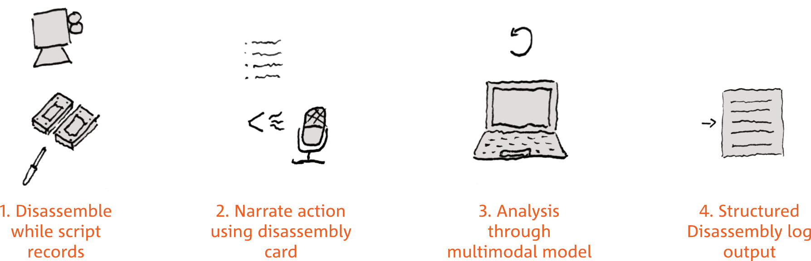
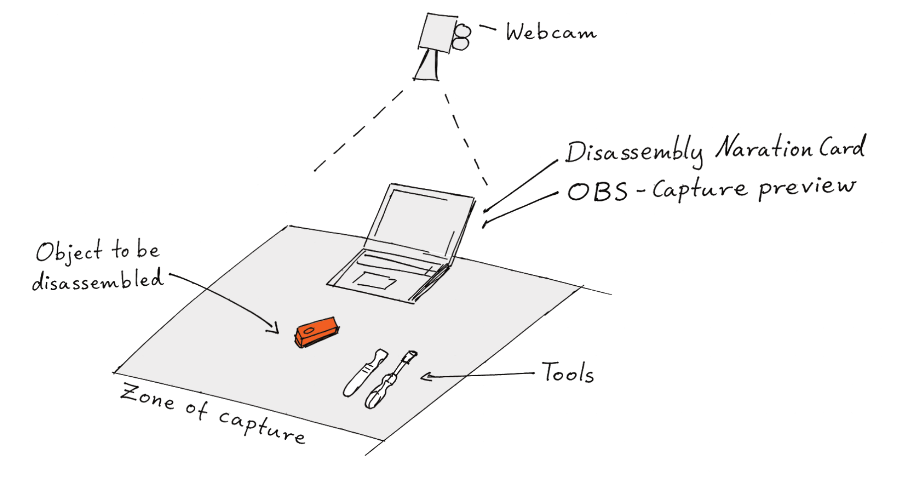

Disassembly annotation pipeline
A research prototype that processes a recorded video of a manual product teardown and generates structured disassembly annotations using Gemini's multimodal vision + audio model. Built for a TU Delft MSc graduation project on shared-use disassembly tools.
The annotation structure is based on the Disassembly Map method (De Fazio et al., 2021), capturing tool, connector type, force, reusability, and automation suitability per step.
Right now it only works with the Google Gemini API.
How it works

You record yourself disassembling a product with OBS (top-down camera + audio). The pipeline then:
- Slices the video into one clip per step
- Lets you keep/skip clips interactively
- Sends each clip to Gemini for structured annotation (vision + speech)
- Consolidates everything into a JSON + Markdown report
While recording, you press SPACE twice per step. Once when the action is done and once when you are done talking about it.
Action
Narrate
Action
Narrate
R
SPACE
SPACE
SPACE
SPACE, ESC
step_01.mp4
step_02.mp4
Each step becomes one clip with the action and your narration. What to say is on the narration card below (printable version).
Narration card
Workflow per step
- Perform the disassembly action
- Place removed component in staging area
- Press SPACE to mark step boundary
- Narrate the parameters below
- Press SPACE again when ready for next step
Say after each step
- Component
- "I just removed the [name/description]"
- Connector type
- "It was connected by..."snap-fitfriction fitadhesivescrewweldedcrimpedother
- Tool used
- "I used..."hands onlyspudgerpliersscrewdriverheat gunknife/blade
- Force level
- "The force was..."low · fingertip · <5Nmoderate · wrist · 5–20Nhigh · arm/body · >20N
- Connector survived?
- "The connector is [intact / damaged / destroyed]"
- Visibility
- "The connector was [visible / hidden before starting]"
- Repositioning?
- "I [did / did not] need to reposition the product"
Dependencies (ask yourself)
- Was this step necessary to reach the target component?
- Could something else have been removed first instead?
- Could this have been done in parallel with another step?
- Is the next step blocked until this one is complete?
Say it out loud: "This step was [required before / independent of] the previous one"
Before you start
- Camera positioned top-down with ruler in frame for scale
- Clear staging area to the side for removed components
- OBS open (video + audio), not recording yet
- Hotkey logger running (
01_capture.py), press R to start recording
- Tools laid out: spudger, pliers, screwdriver set, blade
- State target components on camera before starting
Output
You get a disassembly_log.json and a readable disassembly_log.md.
For every step the model fills in:
- Component
- The part that came off
- Tool
- Hands, spudger, pliers, screwdriver, heat gun, knife…
- Action
- Pulling, prying, twisting, cutting, unscrewing, peeling, sliding
- Connector
- Snap fit, friction fit, adhesive, screw, weld, crimp
- Force
- Low, moderate or high
- Reusable
- Whether the connector survived
- Penalties
- Things that make a step harder, from the Disassembly Map: product manipulation, hidden connector, uncommon tool, non-reusable connector
- Uncertainties
- What the model could not tell
- Confidence
- High, medium or low, per field
Setup
You need a terminal for this: Terminal on macOS, PowerShell on Windows.
-
What you need
- A laptop (I only tested it on macOS)
- A camera looking down at your work surface, and a microphone
- Python 3.10 or newer
- A Google account for the API key

-
Download the code
git clone https://github.com/Floris-deGroot/auto_disassembly_mapping.git
cd auto_disassembly_mapping
If you don't have git, you can also download it on the GitHub page. Click Code → Download ZIP and unzip it. To open that folder in the terminal, type cd and a space, drag the folder into the terminal window and press Enter.
-
Install the requirements
In the project folder, install the packages from requirements.txt:
pip install -r requirements.txt
-
Install ffmpeg
ffmpeg cuts the video into clips.
brew install ffmpeg
winget install Gyan.FFmpeg
sudo apt install ffmpeg
On macOS this needs Homebrew.
-
Set up OBS
Download OBS Studio. Then:
- Add your top-down camera as a Video Capture Device source, and check that your mic shows up in the Audio Mixer.
- Settings → Output → Recording: set the Recording Path to the
data/raw folder inside the project, and the Recording Format to MP4.
- Tools → WebSocket Server Settings: tick Enable WebSocket server, click Show Connect Info and copy the Server Password.
-
Get an API key
Go to Google AI Studio, sign in and click Get API key → Create API key.
Do not share your API key online. Other people can use it, and you pay for it.
- The free tier works for testing but has rate limits. One long disassembly video cost me around €0.07.
- On the free tier Google may use what you upload to improve its products. Check the terms before you record anything sensitive.
-
Add your keys
cp .env.example .env
open -e .env
copy .env.example .env
notepad .env
cp .env.example .env
nano .env
This makes the .env file and opens it. It's a hidden file, so you won't see it in Finder. Fill in both values:
GEMINI_API_KEY=your-key-here
OBS_WS_PASSWORD=your-obs-websocket-password
Keep this file to yourself. It's in .gitignore, so it won't end up on GitHub.
-
Do a test run
Open OBS, then go through Running a teardown with two quick fake steps. If you get a log at the end, you're set.
Something not working?
- Key presses do nothing (macOS)
- System Settings → Privacy & Security → Input Monitoring: allow your terminal app. You might need Accessibility too. Restart the terminal after.
- Failed to connect to OBS
- OBS has to be open, the WebSocket server enabled, and the password in
.env has to match.
- No .mp4 found in data/raw
- Check the Recording Path and Recording Format in OBS.
- Linux
- The key listener needs an X11 session. It might not work on Wayland.
- Gemini errors 429 or 503
- The script already retries a few times. If it still fails, wait a bit and run it again. Steps that are done get skipped.
- python or pip: command not found
- Use
python3 and pip3 (macOS/Linux) or py (Windows).
- error: externally-managed-environment
- Your Python doesn't allow installing packages globally. Make a virtual environment first with
python3 -m venv .venv and source .venv/bin/activate (Windows: .venv\Scripts\activate), then run the pip command again.
Running a teardown
Open OBS and run the scripts one by one. You can re-run any script if something goes wrong.
-
python 01_capture.py
Asks for a product label, then waits. R starts recording. SPACE when an action is done, talk, SPACE when you are done talking. ESC stops and saves.
-
python 02_segment.py
Cuts the recording into one clip per step.
-
python 03_prune.py
Shows a thumbnail per clip. y keep, s skip, r watch the clip.
-
python 04_analyze.py
Sends each kept clip to Gemini.
-
python 05_consolidate.py
Merges everything into data/output/disassembly_log.json and .md.
-
python archive_run.py
Copies the run to successful_runs/ and clears the working folders for the next one.
Print the narration card or keep it on a second screen while you record.
Make it your own
- Product label
- Asked when you start
01_capture.py. The default is in config.py.
- Target components
TARGET_COMPONENTS in 05_consolidate.py: the parts you want to get out.- The prompt
prompts/step_analysis.txt- The model
GEMINI_MODEL in config.py.- Without narration
- Run
04_analyze_no_narration.py, then 05_consolidate.py --no-narration. It only sends the action part of each clip, so you can compare how much the narration adds.
Ideas to improve it
These are some possible directions to take this project further.
Automate the Disassembly Map
The original method (De Fazio et al., 2021) ends with a visual map: a tree from the complete product down to each component, with the connector, tool, force and penalties on every branch. This pipeline stops at a Markdown table. Most of what goes on the map is already in the log, even the four penalties. What is missing is which steps depend on each other. The model could get that from the narration, and a tool like Graphviz could then draw the map from the JSON.
Try a different model
Gemini takes video and audio in one go, which is why I used it. Most other models only take images, so you would have to pull out frames and transcribe the narration separately.
Run it on your own laptop
It would be interesting to see how far local models can be pushed. For example with a local vision model or a local speech-to-text model, depending on the hardware of your laptop.
Build a standalone station
Image quality is important for vision models, so it would be interesting to design a workstation around this. For example with set places for the tools, and a spot to put the removed components so they are always captured.
Know which tool is in use
In my experience, the model often had trouble detecting which tool was actually being used. A tool holder station with some sensing that detects which tool is currently in use would be interesting.
Skip the hotkeys
Find where one step ends and the next begins from the video and audio, so you don't have to press SPACE at all.
References
De Fazio, F., Bakker, C., Flipsen, B., & Balkenende, R. (2021). The Disassembly Map: A new method to enhance design for product repairability. Journal of Cleaner Production, 320, 128552. https://doi.org/10.1016/j.jclepro.2021.128552